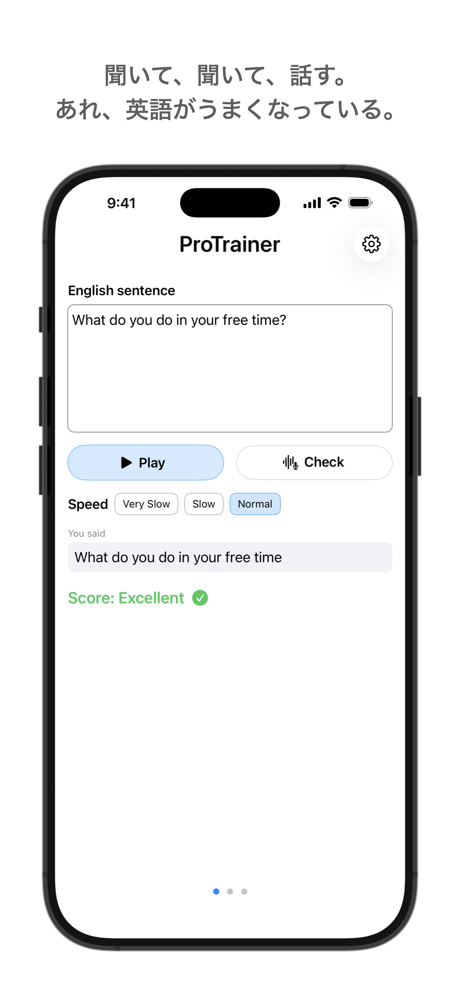
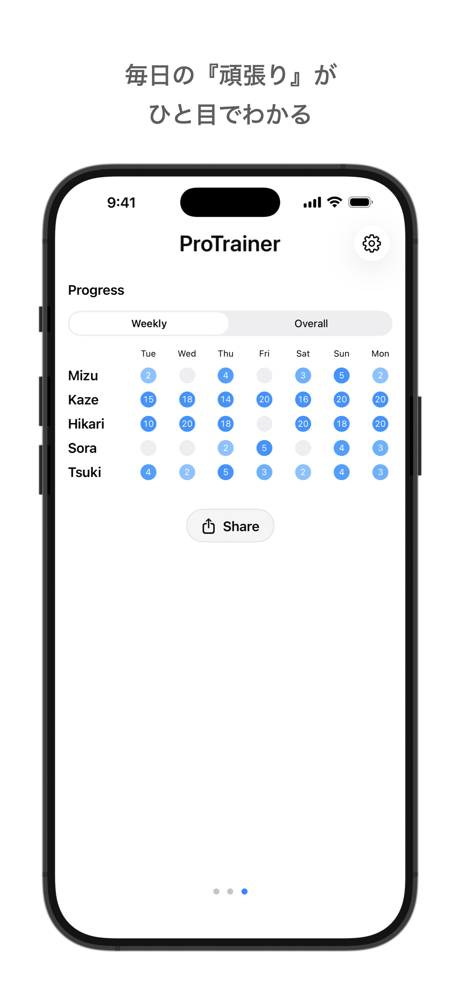
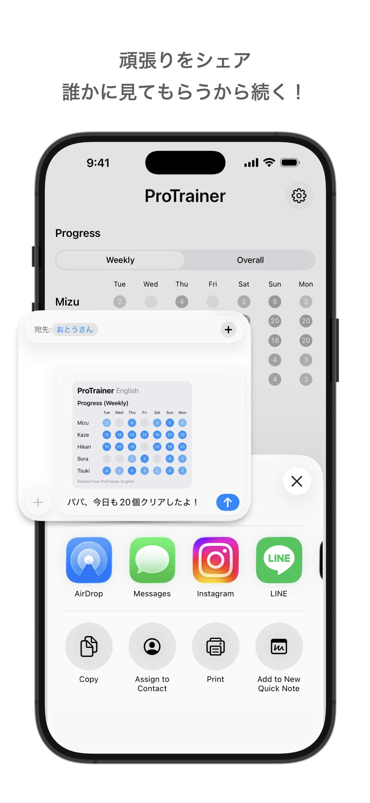

聞いて、聞いて、話す。
あれ、英語が楽しくなっている。



ProTrainerは、英語練習を「ついついやってしまう」習慣に変えるアプリです。AIによる即座の発音判定と、努力が「色」で見えるヒートマップが、あなたの継続を強力にドライブします。
Simple, intuitive English pronunciation training. Track your progress with heatmaps and share your achievements with family.
ご意見・不具合報告は下記までご連絡ください。
[protrainer.dev@gmail.com]